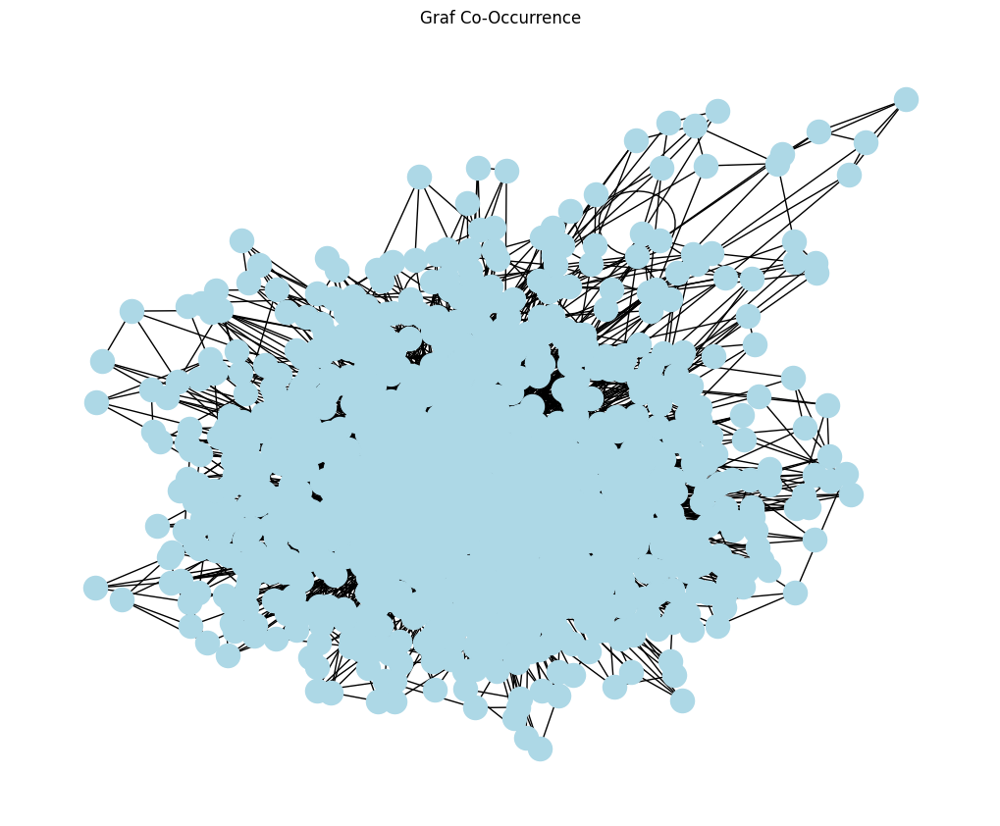

Tugas 10 | Word Graph#
melakukan analisis teks berbasis graf untuk melihat hubungan antar kata dan menemukan kata-kata yang paling penting melalui co-occurrence graph dan PageRank
# ==========================
# 1. Install & Import
# ==========================
!pip install --upgrade pymupdf
!pip install nltk
!pip install networkx
import pymupdf
import nltk
import pandas as pd
import numpy as np
import matplotlib.pyplot as plt
import networkx as nx
# NLTK resources
nltk.download('punkt')
nltk.download('punkt_tab')
nltk.download('stopwords')
Requirement already satisfied: pymupdf in c:\users\endyzan\appdata\local\programs\python\python311\lib\site-packages (1.26.7)
[notice] A new release of pip is available: 24.1 -> 25.3
[notice] To update, run: python.exe -m pip install --upgrade pip
Requirement already satisfied: nltk in c:\users\endyzan\appdata\local\programs\python\python311\lib\site-packages (3.9.2)
Requirement already satisfied: click in c:\users\endyzan\appdata\local\programs\python\python311\lib\site-packages (from nltk) (8.1.3)
Requirement already satisfied: joblib in c:\users\endyzan\appdata\local\programs\python\python311\lib\site-packages (from nltk) (1.2.0)
Requirement already satisfied: regex>=2021.8.3 in c:\users\endyzan\appdata\local\programs\python\python311\lib\site-packages (from nltk) (2023.6.3)
Requirement already satisfied: tqdm in c:\users\endyzan\appdata\local\programs\python\python311\lib\site-packages (from nltk) (4.65.0)
Requirement already satisfied: colorama in c:\users\endyzan\appdata\local\programs\python\python311\lib\site-packages (from click->nltk) (0.4.6)
[notice] A new release of pip is available: 24.1 -> 25.3
[notice] To update, run: python.exe -m pip install --upgrade pip
[notice] A new release of pip is available: 24.1 -> 25.3
[notice] To update, run: python.exe -m pip install --upgrade pip
Requirement already satisfied: networkx in c:\users\endyzan\appdata\local\programs\python\python311\lib\site-packages (3.1)
[nltk_data] Downloading package punkt to
[nltk_data] C:\Users\endyzan\AppData\Roaming\nltk_data...
[nltk_data] Package punkt is already up-to-date!
[nltk_data] Downloading package punkt_tab to
[nltk_data] C:\Users\endyzan\AppData\Roaming\nltk_data...
[nltk_data] Package punkt_tab is already up-to-date!
[nltk_data] Downloading package stopwords to
[nltk_data] C:\Users\endyzan\AppData\Roaming\nltk_data...
[nltk_data] Package stopwords is already up-to-date!
True
Buka PDF dan ekstraksi teks → simpan ke output.txt
# ==========================
# 2. Extract text from jurnal.pdf
# ==========================
doc = pymupdf.open("jurnal.pdf") # ganti ke file jurnal.pdf
out = open("output.txt", "wb") # hasil teks
for page in doc:
text = page.get_text().encode("utf8")
out.write(text)
out.write(bytes((12,))) # page delimiter
out.close()
print("Ekstraksi PDF selesai!")
Ekstraksi PDF selesai!
Code utama#
Baca output.txt dan pecah menjadi kalimat
with open("output.txt", "r", encoding="utf-8") as file:
teks = file.read()
sentences = nltk.sent_tokenize(teks)
print("Total kalimat:", len(sentences))
pd.DataFrame(sentences, columns=["kalimat"]).to_csv("kalimat.csv", index=False, encoding="utf-8")
Total kalimat: 829
PREPROCESSING
# ==========================
# 4. Preprocessing Teks (BERSIH & KETAT)
# ==========================
import re
import nltk
from nltk.corpus import stopwords, wordnet
from nltk.tokenize import word_tokenize
# Download resource tambahan
nltk.download('stopwords')
nltk.download('punkt')
nltk.download('wordnet')
# Stopwords
stop_words = set(stopwords.words('english'))
# Noise khas PDF / LaTeX / Sitasi
PDF_NOISE = {
'tex', 'latex', 'icecite', 'etal', 'fig', 'figure',
'table', 'http', 'https', 'www', 'author', 'paper'
}
# --------------------------
# Helper Functions
# --------------------------
def clean_text_basic(text):
text = text.lower()
text = re.sub(r'[^a-zA-Z\s]', ' ', text) # hanya huruf
text = re.sub(r'\s+', ' ', text)
return text.strip()
def has_vowel(word):
"""Pastikan kata punya vokal"""
return re.search(r'[aeiou]', word) is not None
def excessive_repetition(word, max_repeat=3):
"""Buang nnnnn, xxxxxx, dll"""
return re.search(r'(.)\1{' + str(max_repeat) + ',}', word)
def is_english_word(word):
"""Cek kamus WordNet"""
return bool(wordnet.synsets(word))
def filter_weird_words(words):
filtered = []
for w in words:
# stopword
if w in stop_words:
continue
# panjang kata wajar
if len(w) < 3 or len(w) > 20:
continue
# hanya alfabet
if not w.isalpha():
continue
# harus ada vokal
if not has_vowel(w):
continue
# huruf berulang ekstrem
if excessive_repetition(w):
continue
# noise PDF
if w in PDF_NOISE:
continue
# pastikan kata Inggris
if not is_english_word(w):
continue
filtered.append(w)
return filtered
def preprocess_clean(text):
text = clean_text_basic(text)
words = word_tokenize(text)
words = filter_weird_words(words)
return words
# --------------------------
# Jalankan preprocessing
# --------------------------
clean_words = preprocess_clean(teks)
clean_text_joined = " ".join(clean_words)
# Simpan hasil
with open("preprocessed_clean.txt", "w", encoding="utf-8") as f:
f.write(clean_text_joined)
# Statistik
from collections import Counter
print("Total kata setelah preprocessing:", len(clean_words))
print("Total kata unik:", len(set(clean_words)))
print("\n20 kata paling sering:")
print(Counter(clean_words).most_common(20))
[nltk_data] Downloading package stopwords to
[nltk_data] C:\Users\endyzan\AppData\Roaming\nltk_data...
[nltk_data] Package stopwords is already up-to-date!
[nltk_data] Downloading package punkt to
[nltk_data] C:\Users\endyzan\AppData\Roaming\nltk_data...
[nltk_data] Package punkt is already up-to-date!
[nltk_data] Downloading package wordnet to
[nltk_data] C:\Users\endyzan\AppData\Roaming\nltk_data...
[nltk_data] Package wordnet is already up-to-date!
Total kata setelah preprocessing: 7281
Total kata unik: 1124
20 kata paling sering:
[('text', 251), ('extraction', 118), ('semantic', 113), ('words', 93), ('evaluation', 85), ('benchmark', 80), ('word', 80), ('tools', 69), ('criteria', 60), ('characters', 59), ('document', 56), ('given', 53), ('order', 53), ('format', 50), ('see', 50), ('rule', 50), ('body', 48), ('information', 47), ('like', 47), ('paragraphs', 43)]
eda#
# 5.1 Jumlah kata
print("Jumlah kata:", len(clean_words))
# 5.2 Jumlah kata unik
print("Jumlah kata unik:", len(set(clean_words)))
# 5.3 20 kata paling sering
from collections import Counter
freq = Counter(clean_words)
print("\n20 kata paling sering muncul:")
print(freq.most_common(20))
# 5.4 Distribusi panjang kalimat
sentence_lengths = [len(s.split()) for s in sentences]
print("\nRata-rata panjang kalimat:", sum(sentence_lengths) / len(sentence_lengths))
Jumlah kata: 7281
Jumlah kata unik: 1124
20 kata paling sering muncul:
[('text', 251), ('extraction', 118), ('semantic', 113), ('words', 93), ('evaluation', 85), ('benchmark', 80), ('word', 80), ('tools', 69), ('criteria', 60), ('characters', 59), ('document', 56), ('given', 53), ('order', 53), ('format', 50), ('see', 50), ('rule', 50), ('body', 48), ('information', 47), ('like', 47), ('paragraphs', 43)]
Rata-rata panjang kalimat: 19.99276236429433
Buat Co-Occurrence Matrix dari teks
co-occurrence matrix:#
Menggunakan jendela (window size = 2), kode menghitung seberapa sering dua kata muncul berdekatan.
Tujuannya: menggambarkan hubungan antar kata dalam dokumen berdasarkan kedekatan munculnya.
window_size = 2
from collections import defaultdict, Counter
co_occ = defaultdict(Counter)
for i, word in enumerate(clean_words):
for j in range(max(0, i - window_size), min(len(clean_words), i + window_size + 1)):
if i != j:
co_occ[word][clean_words[j]] += 1
unique_words = list(set(clean_words))
co_matrix = np.zeros((len(unique_words), len(unique_words)), dtype=int)
word_index = {word: idx for idx, word in enumerate(unique_words)}
for word, neighbors in co_occ.items():
for neighbor, count in neighbors.items():
co_matrix[word_index[word]][word_index[neighbor]] = count
co_matrix_df = pd.DataFrame(co_matrix, index=unique_words, columns=unique_words)
co_matrix_df
| baseline | conference | single | consisting | explicitly | algorithms | exclusively | indexes | pitfalls | merges | ... | measure | several | computes | marker | directly | layout | overview | found | tags | segmentation | |
|---|---|---|---|---|---|---|---|---|---|---|---|---|---|---|---|---|---|---|---|---|---|
| baseline | 0 | 0 | 0 | 0 | 0 | 0 | 0 | 0 | 0 | 0 | ... | 0 | 0 | 0 | 0 | 0 | 0 | 0 | 0 | 0 | 0 |
| conference | 0 | 0 | 0 | 0 | 0 | 0 | 0 | 0 | 0 | 0 | ... | 0 | 0 | 0 | 0 | 0 | 0 | 0 | 0 | 0 | 0 |
| single | 0 | 0 | 0 | 0 | 0 | 0 | 0 | 0 | 0 | 0 | ... | 0 | 0 | 0 | 0 | 0 | 0 | 0 | 0 | 0 | 0 |
| consisting | 0 | 0 | 0 | 0 | 0 | 0 | 0 | 0 | 0 | 0 | ... | 0 | 0 | 0 | 0 | 0 | 0 | 0 | 0 | 0 | 0 |
| explicitly | 0 | 0 | 0 | 0 | 0 | 0 | 0 | 0 | 0 | 0 | ... | 0 | 0 | 0 | 0 | 0 | 0 | 0 | 0 | 0 | 0 |
| ... | ... | ... | ... | ... | ... | ... | ... | ... | ... | ... | ... | ... | ... | ... | ... | ... | ... | ... | ... | ... | ... |
| layout | 0 | 0 | 0 | 0 | 0 | 0 | 0 | 0 | 0 | 0 | ... | 0 | 0 | 0 | 0 | 0 | 0 | 0 | 0 | 0 | 0 |
| overview | 0 | 0 | 0 | 0 | 0 | 0 | 0 | 0 | 0 | 0 | ... | 0 | 0 | 0 | 0 | 0 | 0 | 0 | 0 | 0 | 0 |
| found | 0 | 0 | 0 | 0 | 0 | 0 | 0 | 0 | 0 | 0 | ... | 0 | 0 | 0 | 1 | 0 | 0 | 0 | 0 | 0 | 0 |
| tags | 0 | 0 | 0 | 0 | 0 | 0 | 0 | 0 | 0 | 0 | ... | 0 | 0 | 0 | 0 | 0 | 0 | 0 | 0 | 0 | 0 |
| segmentation | 0 | 0 | 0 | 0 | 0 | 0 | 0 | 0 | 0 | 0 | ... | 0 | 0 | 0 | 0 | 0 | 0 | 0 | 0 | 0 | 0 |
1124 rows × 1124 columns
Buat Graf Co-Occurrence
Membangun graf co-occurrence & pagerank#
Matrix tersebut dikonversi menjadi sebuah graf (network) menggunakan networkx.
Tujuannya: memvisualisasikan teks sebagai jaringan kata, sehingga struktur hubungan antar konsep dapat terlihat.
G = nx.from_numpy_array(co_matrix_df.to_numpy())
plt.figure(figsize=(10, 8))
nx.draw(G, with_labels=False, node_color='lightblue', node_size=300)
plt.title("Graf Co-Occurrence")
plt.show()
pagerank_scores = nx.pagerank(G)
pagerank_df = pd.DataFrame({
"word": list(co_matrix_df.index),
"pagerank": list(pagerank_scores.values())
}).sort_values(by="pagerank", ascending=False)
print("\n20 Kata Teratas berdasarkan PageRank:")
print(pagerank_df.head(20))

20 Kata Teratas berdasarkan PageRank:
word pagerank
415 text 0.025373
187 extraction 0.012837
824 semantic 0.010744
1017 words 0.010138
490 evaluation 0.009355
890 word 0.008259
543 benchmark 0.008167
165 tools 0.007838
203 criteria 0.007756
458 order 0.007288
708 given 0.006955
763 rule 0.006081
999 characters 0.005861
832 see 0.005855
684 articles 0.005752
875 like 0.005716
747 document 0.005427
319 les 0.005329
1112 command 0.005181
405 section 0.005093
Menghitung PageRank untuk mengidentifikasi kata paling penting#
menemukan kata yang paling sentral
menentukan topik dominan dalam paper
menganalisis kata yang paling mempengaruhi jaringan
PageRank berfungsi untuk menentukan kata mana yang paling penting / paling berpengaruh dalam dokumen berdasarkan koneksi antar kata.
Seberapa banyak sebuah kata dikunjungi oleh kata lain Semakin sering suatu kata muncul berdekatan dengan banyak kata lain → semakin tinggi nilai PageRank-nya.
Seberapa penting kata-kata yang terhubung dengannya Jika kata A muncul bersama kata B, dan kata B adalah kata penting, maka A ikut menjadi penting.
from networkx.algorithms.community import louvain_communities
communities = louvain_communities(G)
print("\nTotal komunitas:", len(communities))
for i, c in enumerate(communities):
print(f"Komunitas {i+1}: {len(c)} kata")
Total komunitas: 13
Komunitas 1: 18 kata
Komunitas 2: 17 kata
Komunitas 3: 164 kata
Komunitas 4: 84 kata
Komunitas 5: 72 kata
Komunitas 6: 56 kata
Komunitas 7: 87 kata
Komunitas 8: 24 kata
Komunitas 9: 131 kata
Komunitas 10: 101 kata
Komunitas 11: 69 kata
Komunitas 12: 170 kata
Komunitas 13: 131 kata
Komunitas
word_list = list(co_matrix_df.index)
pagerank_dict = dict(zip(pagerank_df['word'], pagerank_df['pagerank']))
hasil_komunitas = []
for i, comm in enumerate(communities):
comm_words = [word_list[node] for node in comm]
pr_values = {w: pagerank_dict[w] for w in comm_words}
top_word = max(pr_values, key=pr_values.get)
hasil_komunitas.append({
"komunitas": i+1,
"jumlah_kata": len(comm_words),
"kata_paling_dominan": top_word,
"pagerank": pr_values[top_word]
})
df_dominan = pd.DataFrame(hasil_komunitas)
df_dominan
| komunitas | jumlah_kata | kata_paling_dominan | pagerank | |
|---|---|---|---|---|
| 0 | 1 | 18 | make | 0.003023 |
| 1 | 2 | 17 | digital | 0.001988 |
| 2 | 3 | 164 | articles | 0.005752 |
| 3 | 4 | 84 | text | 0.025373 |
| 4 | 5 | 72 | page | 0.003640 |
| 5 | 6 | 56 | learning | 0.001286 |
| 6 | 7 | 87 | tree | 0.003942 |
| 7 | 8 | 24 | line | 0.004053 |
| 8 | 9 | 131 | words | 0.010138 |
| 9 | 10 | 101 | criteria | 0.007756 |
| 10 | 11 | 69 | semantic | 0.010744 |
| 11 | 12 | 170 | rule | 0.006081 |
| 12 | 13 | 131 | word | 0.008259 |
EDA#
print("Jumlah kalimat:", len(sentences))
Jumlah kalimat: 829
from nltk.tokenize import word_tokenize
words_all = word_tokenize(teks) # teks = hasil preprocessing
print("Jumlah kata:", len(words_all))
Jumlah kata: 20315
unique_words = set(words_all)
print("Jumlah kata unik:", len(unique_words))
Jumlah kata unik: 2148
from collections import Counter
word_freq = Counter(words_all)
print("20 kata paling sering muncul:")
print(word_freq.most_common(20))
20 kata paling sering muncul:
[(',', 1004), ('the', 893), ('.', 825), ('of', 610), ('and', 418), ('(', 417), (')', 409), ('a', 383), ('is', 298), ('in', 282), ('to', 278), ('PDF', 229), ('for', 209), (':', 209), ('text', 195), ('from', 168), ('or', 166), ('are', 142), ('[', 133), (']', 133)]
sentence_lengths = [len(s.split()) for s in sentences]
print("Rata-rata panjang kalimat:", sum(sentence_lengths) / len(sentence_lengths))
print("Kalimat terpendek:", min(sentence_lengths), "kata")
print("Kalimat terpanjang:", max(sentence_lengths), "kata")
Rata-rata panjang kalimat: 19.99276236429433
Kalimat terpendek: 1 kata
Kalimat terpanjang: 390 kata
word_lengths = [len(w) for w in words_all]
print("Rata-rata panjang kata:", sum(word_lengths) / len(word_lengths))
print("Kata terpendek:", min(word_lengths))
print("Kata terpanjang:", max(word_lengths))
Rata-rata panjang kata: 4.099729264090573
Kata terpendek: 1
Kata terpanjang: 38